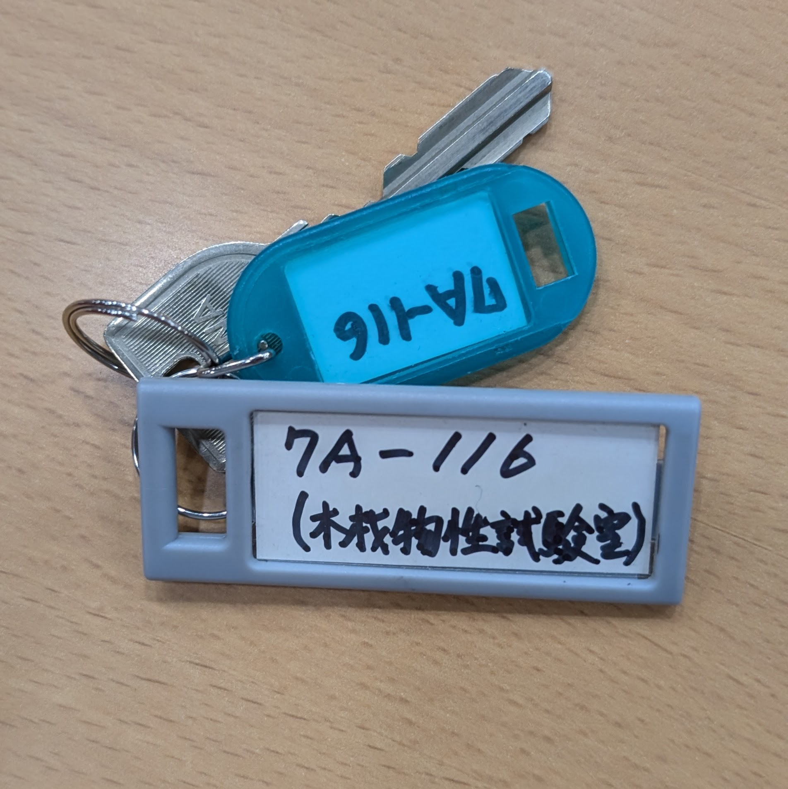
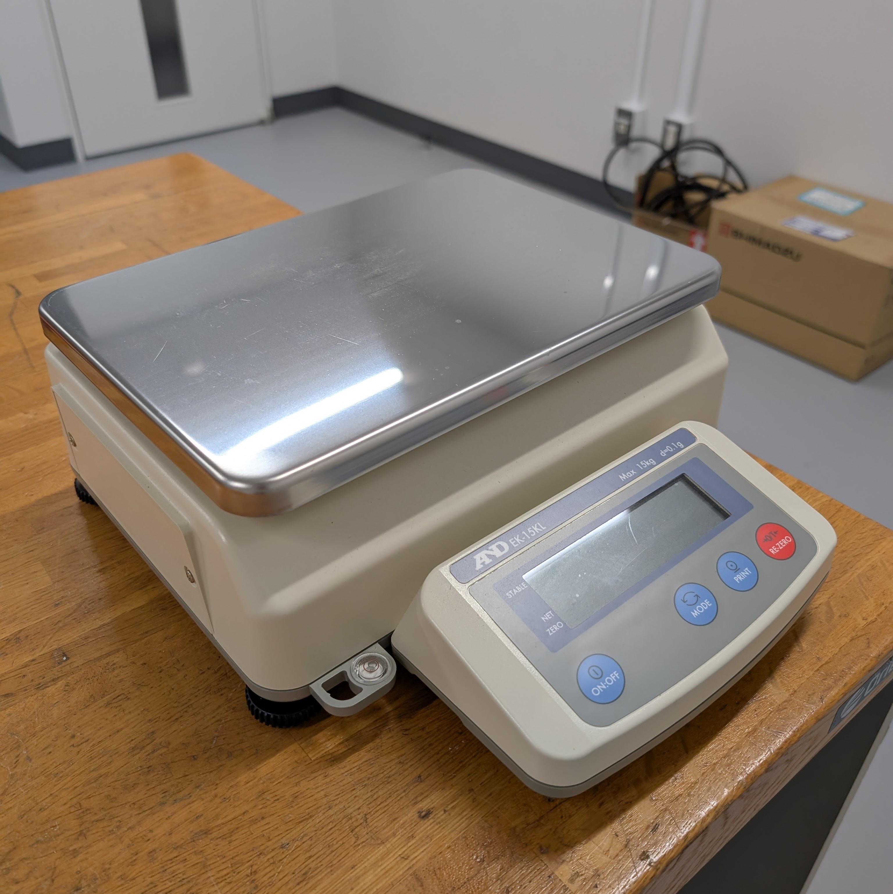
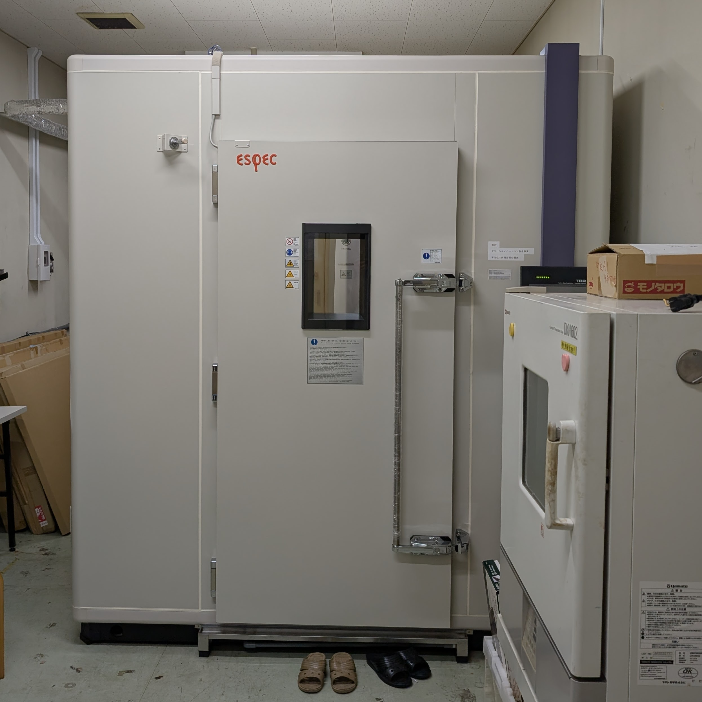
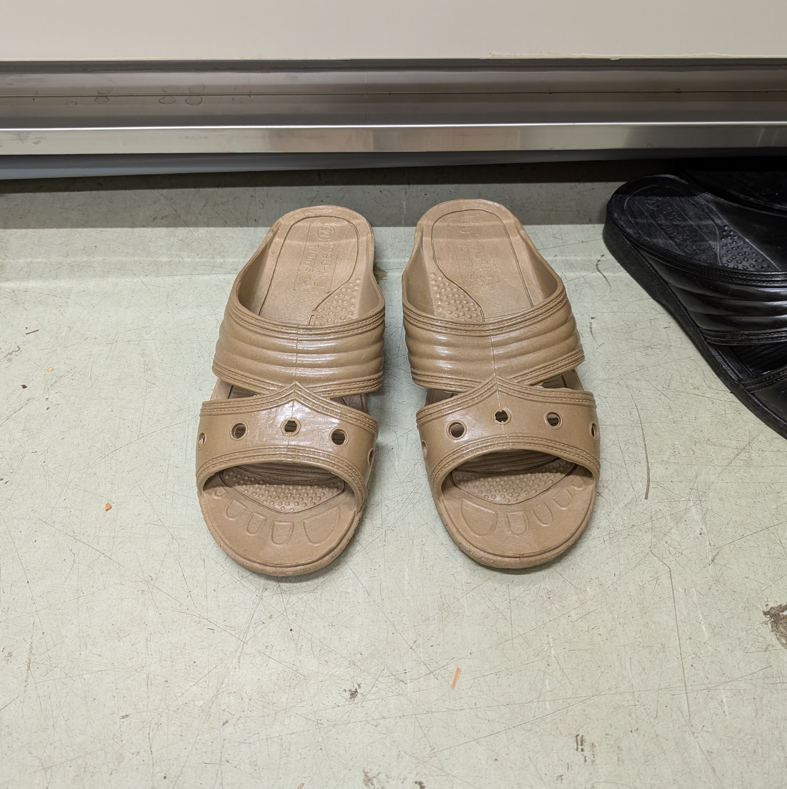
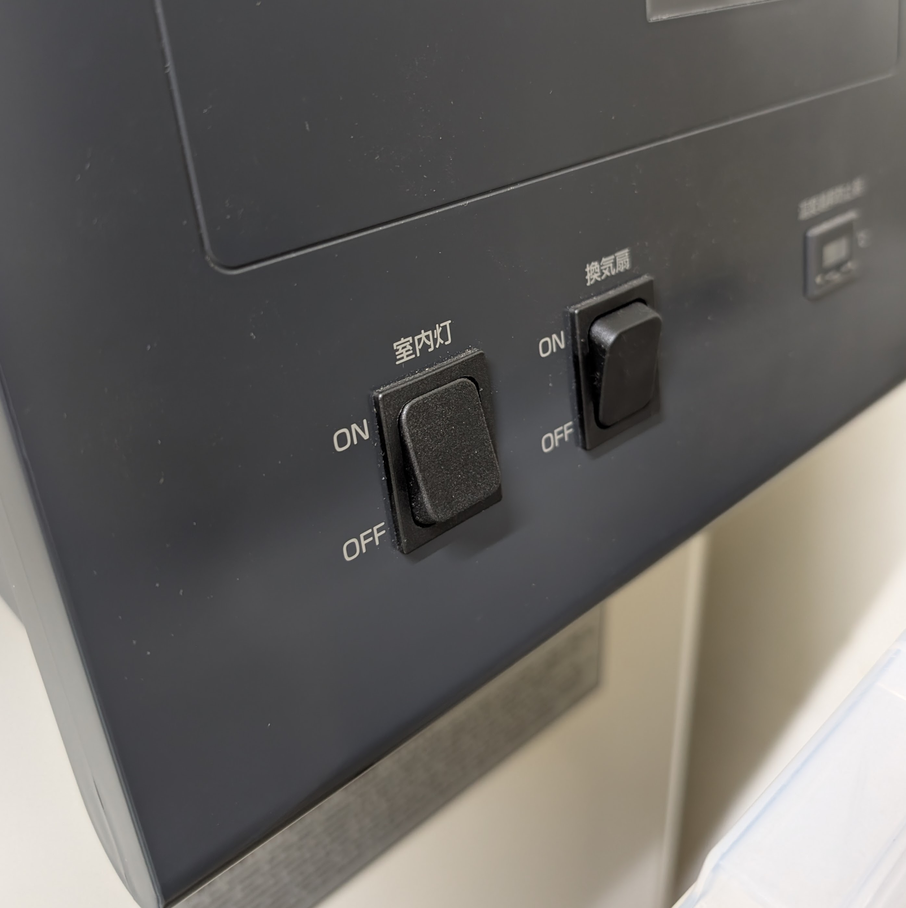
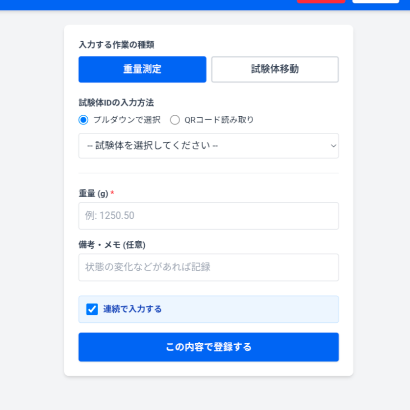
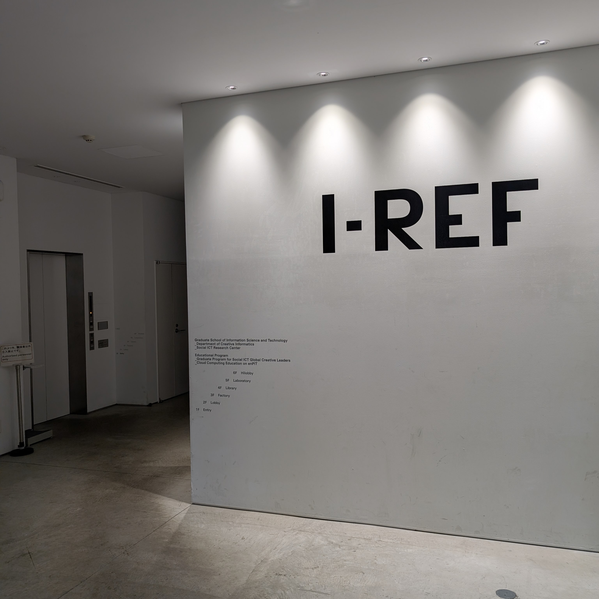
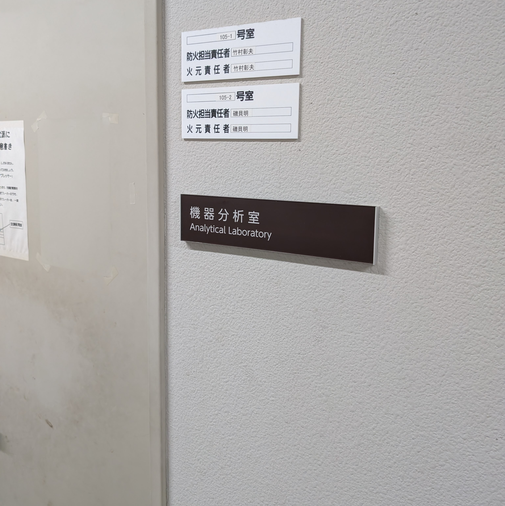
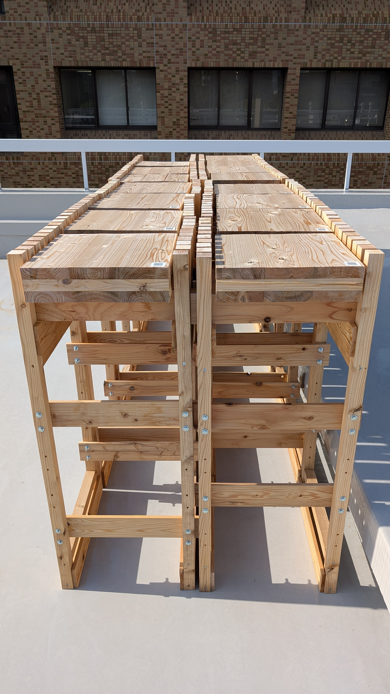

このページでは、試験体管理システムの使い方について説明します。不明点はお問い合わせページからご連絡ください。
測定の流れ
7号館116室の鍵と重量計を持って7号館へ向かう


7号館116室の恒温恒湿チャンバーに入り、試験体を外に取り出して重量を測定する
注意点: チャンバー内に入る時は、サンダルに履き替えてください。
また、室内灯と換気のスイッチを入れてから入ってください。



試験体の重量を測定する際は、試験体重量入力フォームから試験体IDをQRコード読み取りで入力し、測定値を記録する

I-REF棟に移動し、機器分析室の中にある恒温室に入り、試験体の重量を同様に測定する


余裕があれば、5号館屋上の試験体を観察し、何か変化があれば「備考・メモ」に記録する

使い方
試験体を測定・移動する時
試験体を登録するには、データ入力ページにアクセスし、必要な情報を入力してください。
測定や移動の際には、試験体のIDを入力して、測定値や移動先を記録することができます。
試験体IDは、プルダウンメニューから選択する方法と、試験体のQRコードをスキャンして自動入力する方法 (オススメ！) があります。
QRコードをスキャンするには、スマートフォンのカメラアプリやQRコードリーダーアプリを使用してください。
QRコードをスキャンすると、試験体IDが自動的に入力されます。
試験体の重量測定値や移動先を入力した後、送信ボタンをクリックしてください。
「連続で入力する」にチェックを入れると、送信後にフォームがリセットされ、続けて次の試験体の入力が可能になります。
注意点: 測定値や移動先を入力する際には、正確な情報を入力してください。誤った情報を入力すると、試験体の管理に影響を与える可能性があります。
写真を記録したい時
試験体の写真を記録するには、ギャラリーページにアクセスしてください。
ギャラリーページでは、試験体の写真をアップロードしたり、既存の写真を閲覧することができます。
写真をアップロードする際には、アクセス権限が求められる場合がありますので、必要に応じてログインしてください。
何か気づいた点があれば、積極的に写真を記録してください。撮った写真はヘッダーに表示されるので、自由に写真を撮ってくださいね！
測定日・回収日の確認方法
試験予定を確認するには、カレンダーページにアクセスしてください。
カレンダーページでは、試験体の測定日や回収日を確認することができます。
次回測定日は青色で、回収日は赤色で表示されます。
カレンダー上で日付をクリックすると、詳細な情報が表示されます。
参考資料を見たい時
修論や参考資料を確認するには、修論・参考資料ページにアクセスしてください。